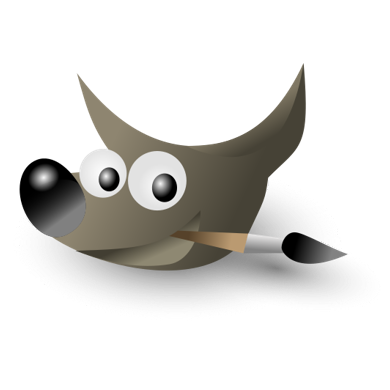
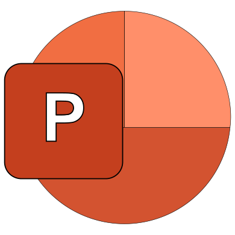
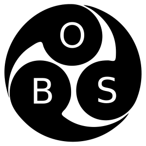

Junior Web Developer & Designer · Photo & Video Editor
Looking for an apprenticeship · Let’s create something great together
Contact Me Send Email


About Me
• I'm Gaspare Tocci, a junior web developer based in London.
• I started in 2023, teaching myself tools like GIMP, Inkscape,
and Blender, before joining the GetSetUK Web Development Bootcamp.
• I'm passionate about clean code, responsive design, and user
experience.
• I enjoy building real projects and continuously improving through courses and hands-on practice.
• I follow best practices like performance optimization, using formats such as SVG and WEBP, and applying minification for faster load times.
• I also enjoy photo and video editing, and I use AI tools to support creative
and coding tasks.
• I'm currently looking for an apprenticeship or entry-level role where I can grow as part of a
modern, collaborative team.
My Tools
 Inkscape:
Inkscape:
Used for creating and editing vector graphics(SVG), ensuring
scalable and high-quality visuals. I leveraged its powerful tracing capabilities and drawing tools for
designing custom logos, icons, and illustrations.
VS Code:
My preferred code editor for writing clean, efficient code while following
best practices. I use extensions such as HTML Preview, Live Preview,
Open
Browser Preview, Code Spell Checker, and Prettier for real-time
updates,
spell checking, and automatic code formatting.

Gimp:
Used for image editing and manipulation, enhancing photos, and creating custom
graphics. I utilized advanced tools like layers, masks, and
filters
to achieve professional visual effects.
Blender:
Used for 3D modeling and animation, creating
detailed
models and smooth animations to enhance interactivity and visual impact in my projects.
 Figma:
Figma:
Used for UI design and collaborative
prototyping. I
create interactive wireframes and mockups to facilitate design communication and real-time teamwork.
Filmora:
A user-friendly video editing tool. I use its
effects,
transitions, and audio editing features to create polished, engaging videos.

PowerPoint:
Used to create impactful visuals and a clear
structure in presentations. I designed custom slides incorporating multimedia
elements and
animations to engage audiences effectively.
Git:
Used for version control and collaboration in
software
development. I utilize Git commands for managing code versions, branching,
merging, and working with team members to ensure project integrity and
efficiency.
GitHub:
A platform for hosting code repositories and enabling
collaborative development. I use GitHub to manage project workflows through
issues
and pull requests, streamline code reviews, and facilitate teamwork across distributed
environments.

OBS:
A versatile tool for video recording and live
streaming. I
utilize its features to capture high-quality footage, set up custom scenes and sources, and
stream
live events with dynamic overlays and smooth transitions to boost audience engagement.
Technical Details
This portfolio uses Bootstrap for the navigation bar and carousel, customized to match the site's branding. Logos and icons were created in Inkscape and exported as SVG for scalability.
Scroll animations are implemented with the AOS (Animate on Scroll) library for subtle visual effects.
Stylesheets are divided into two files: one for global resets, header, and footer; another for main layout and design. Shared styles are imported via @import.
Typography uses the system-ui font family for performance, with clamp() ensuring responsive font sizes. CSS follows a mobile-first approach for progressive enhancement.
The hero image was AI-generated, refined in GIMP, and optimized as WEBP for fast loading.
This portfolio is continuously evolving to improve functionality and visual polish, focusing on a smooth, accessible, and engaging user experience.